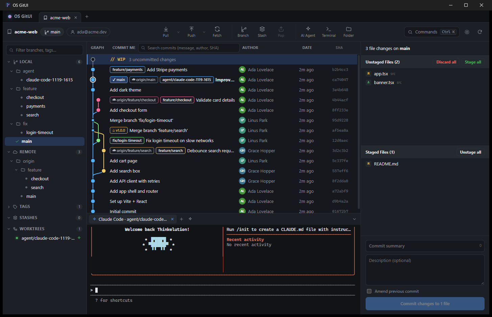
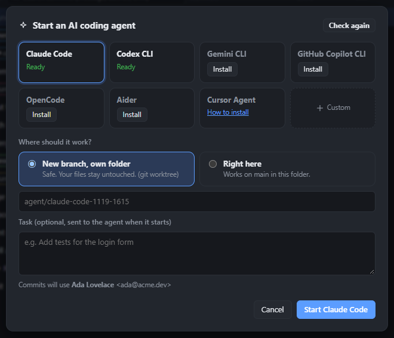
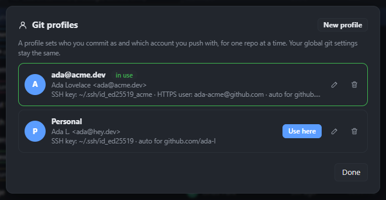
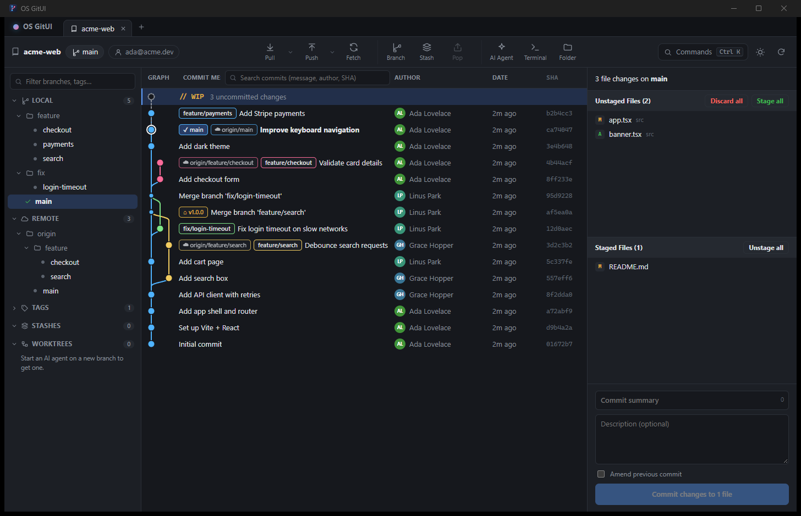

The free Git client
with AI agents built in.
Start Claude Code, Codex or Gemini with one click. Each agent works on its own branch, in its own folder, so your code stays safe. Review what it did in the commit graph.

One click. One branch. No risk.
- Click "AI Agent"Pick Claude Code, Codex, Gemini or another agent.
- Not installed? Click InstallThe app runs the install command for you.
- Give it a task, or don'tType what you want. It is sent when the agent starts.
- It gets its own branch and folderA git worktree, so your files are never touched.
- Watch it, then reviewThe agent runs in the built-in terminal. Its commits show in the graph.

Many agents at once
Run several agents side by side, each on its own branch. Switch between them in the terminal tabs.
Worktrees made easy
Every agent branch shows in the sidebar with a live dot. Open it in a tab, or remove it when done.
Built-in terminal
A real terminal inside the app on Windows, macOS and Linux. Open a shell in any repo or worktree.
Bring your own agent
Add any command line tool as a custom agent, with your own flags and models.
Add OS GitUI to Claude Code and Codex.
One click on Connect in the app, or one command. Your agent gets an osgitui tool and a /gitui command. Ask it to "open this in OS GitUI" and review the changes here.
claude mcp add --scope user osgitui -- the-os-gitui mcpcodex mcp add osgitui -- the-os-gitui mcpUse the full app path if it is not on your PATH. See the README for macOS, Windows and Linux paths.

Work and personal accounts, on one computer.
- Commit as the right person with name and email per repo.
- Push with the right key by picking an SSH key per profile.
- Pick the right HTTPS account for GitHub, GitLab or any host.
- Automatic for remotes like
github.com/acme. - Choose a profile when you clone.
- Safe. Global git settings stay the same. No passwords are stored.
Everything you need for daily Git
A fast, native-feeling client. It runs your real git, so hooks, SSH keys and signing just work.

Commit graph
Colored lanes for every branch and merge. Smooth with tens of thousands of commits.
Stage by line
Stage, unstage or discard whole files, single hunks, or just the lines you pick.
Interactive rebase
Drag to reorder. Pick, reword, squash, fixup or drop commits.
History and blame
See every change to a file, even across renames, and who wrote each line.
Branches and tags
Create, switch, rename, delete, merge and rebase. Branches group into folders.
Remotes
Fetch, pull (fast-forward, merge or rebase) and push, with ahead and behind counts.
Conflicts
Take mine or theirs per file. Clear abort and continue buttons.
Command palette
Press Ctrl K or ⌘ K for any action, branch or file.
Light and dark
Two themes, resizable panels and tabs for many repos.
Download
Free and open source. Needs Git 2.31 or newer.
Coming next
- AI commit messages: write the message from your staged changes.
- AI review: explain a diff, or review an agent's branch before you merge.
- Pull requests: GitHub and GitLab reviews inside the app.
- Merge conflict editor: pick lines from each side.
Questions
Is OS GitUI free?
Yes. OS GitUI is free and open source under the MIT license, for personal and commercial use.
Is OS GitUI a free alternative to GitKraken?
Yes. It covers the daily Git features of tools like GitKraken: commit graph, staging, branches, merge, rebase, stashes and many accounts. It also runs AI coding agents built in.
Which AI coding agents does it support?
Claude Code, OpenAI Codex CLI, Gemini CLI, GitHub Copilot CLI, OpenCode, Aider, Cursor Agent, or any command you add.
Can I use OS GitUI from inside Claude Code or Codex?
Yes. Click Connect in the app, or run one command. The agent gets an osgitui MCP tool and a /gitui command that opens the repo in OS GitUI.
Can I use several Git accounts on one computer?
Yes. Git profiles set the commit name, email, SSH key and HTTPS user per repository. Your global Git settings stay the same.
Which systems does it run on?
macOS (Apple Silicon and Intel), Windows 10 and 11, and Linux (.deb, .rpm and AppImage). It needs Git 2.31 or newer.